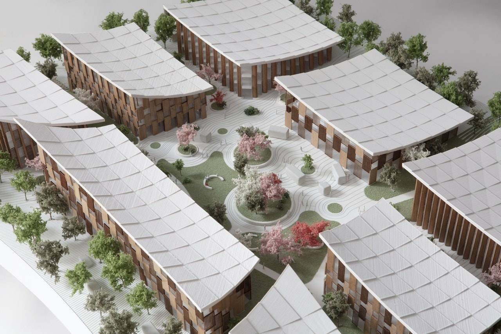
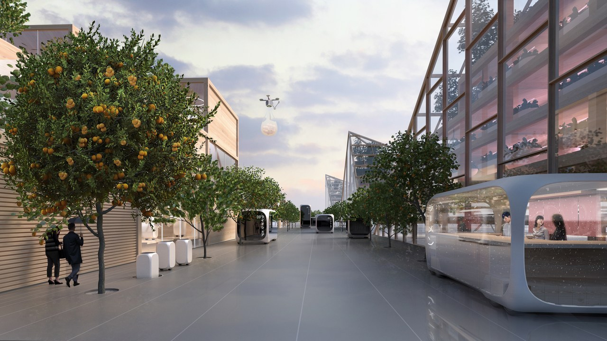
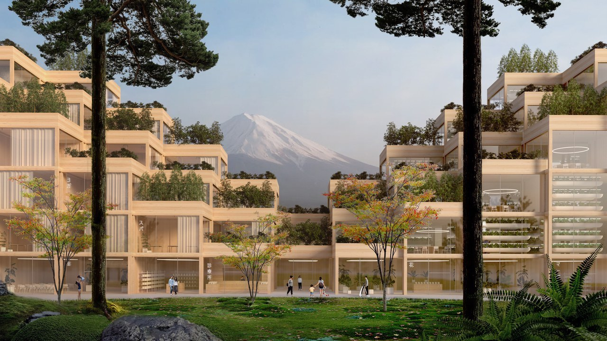
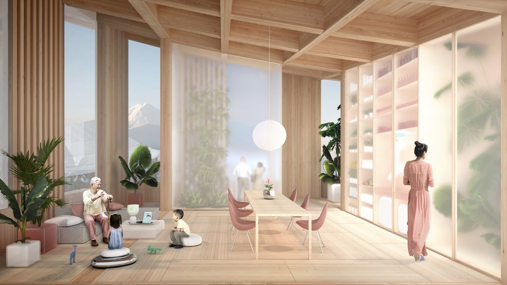

#05
Bjarke Ingels
Is Creating
a ‘City of
the Future’
Near Japan’s
Fujiyama
If any starchitect were tasked with the grandiose request of designing a city for the future, one name might appear on everyone's short list: Bjarke Ingels. Consider that in the past five years, the Danish-born architect has combined a waste-to-energy power plant that emits no toxins with a man-made ski slope in Copenhagen, while designing a head-turning private home in Latin America. So it made sense that when Toyota—the world's largest automaker—contemplated who could design a futuristic city to test their autonomous vehicles on a population of citizens who would live there full time, they turned to Bjarke Ingels.
It was announced today at CES in Las Vegas that Toyota has partnered with Bjarke Ingels Group (BIG) to weave together the functionality of driverless cars, various new street designs, and cutting-edge delivery systems and test the result in real time on 2,000 people (including Toyota employees and their families). In other words, BIG will be, at least on a small scale, creating a world that we are all hurtling toward. The announcement's venue couldn't have been more appropriate: CES is the annual event at which tech lovers and the general public learn what's next in cutting-edge technology.
A cluster of buildings around a central pavilion. Photo: Bjarke Ingels Group
Dubbed Woven City, the 175-acre site (once home to a factory) will be located at the base of Mount Fuji, roughly an hour's commute from Tokyo. "Imagine a smart city that would allow researchers, engineers, and scientists the opportunity to freely test technology such as autonomy, mobility as a service, personal mobility, robotics, smart home connected technology, AI, and more, in a real-world environment," said Akio Toyoda, Toyota's CEO, in a statement.
"This is a truly unique opportunity to create an entire community, or ‘city,’ from the ground up and allow us to build an infrastructure of the future that is connected, digital, and sustainable."
What's more, the entire city will be powered by solar energy, geothermal energy, and the company’s hydrogen fuel cell technology.
The roads, for example, will look different from any other road in the world. Instead of one street for vehicles and a sidewalk next to it for pedestrians, BIG has deconstructed the traditional road into three separate forms. "With the Woven City we peel apart and then weave back together the three components of a typical road into a new urban fabric: a street optimized for automated vehicles, a promenade, and a linear park for pedestrians," Bjarke Ingels said in a statement.
One of the three streets will specifically handle faster, autonomous modes of transportation. Photo: Bjarke Ingels Group
One of the three streets will be used for faster, autonomous vehicles. Another, the promenade, is designed for those who wish to travel on bicycles, scooters, and other modes of travel. The third type of street will be a path dedicated to pedestrians. The area will include flowers and trees, breaking up the grid of other parts of the city.
The buildings will be constructed using traditional Japanese techniques of all-wood architecture. Many of the structures will have views of Mount Fuji in the distance. Photo: Bjarke Ingels Group
"One of the biggest breakthroughs in the process was accepting the city of the future doesn’t have to look futuristic, but rather the opposite should hold true," Leon Rost, a partner at BIG, tells AD. "Technology at its best is invisible and secondary to human interaction and connection to nature." As such, all of the buildings, both residential and commercial, will be constructed using timber, a mode that's both historic in the region and eco-friendly. But that's the only way in which these buildings will be looking to the past for inspiration. Inside, the latest technologies (such as in-home robotics) will be used to perform daily tasks including automatic grocery deliveries, laundry pickups, and trash disposal.

The latest technologies will be used in domestic life for tasks such as automatic grocery deliveries. Photo: Bjarke Ingels Group
A century ago, automobiles ignited a transportation revolution that made the world more connected. The hope is that these same companies (Toyota was founded in 1937) can usher in the next wave of connection—this time, however, in a more eco-friendly manner. Woven City, which is expected to break ground in 2021, seems to be a step in the right direction.